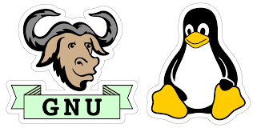

نظام التشغيل لينكس

سبب الحرية التي يوفرها لينكس فقد فتح المجال للآخرين للتطوير عليه بشكل نجح في التأسيس لنظام تطوره أطراف متعدّدة، حتى أصبح يعمل على طيف عريض من المنصات من الخوادم العملاقة إلى الحواسيب المنزلية وأجهزة الهاتف الجوال، وتطورت واجهات المستخدم العاملة عليه لتدعم كل لغات العالم تقريبًا، وبسبب كونه حر (مفتوح المصدر) وسهولة تطويره وإتاحة ذلك للجميع، فإن سرعة تطوره عالية وأعداد مستخدميه تتزايد على مستوى الأجهزة الشخصية والخوادم.
تاريخ لينكس
بدأ لينكس في عام 1991 كمشروع شخصي من قبل الطالب الفنلندي لينوس تورفالدس، لإنشاء نواة نظام تشغيل حر جديد، نتج عن المشروع نواة لينكس. وهي منذ الإصدار الأول من الكود المصدري في عام 1991، قد نمت من عدد صغير من ملفات سي ووصلت إلى أكثر من 16 مليون سطر برمجي في الإصدار 3.10 في عام 2013 منشورة تحت رخصة جنو العمومية.
مشروع جنو
بدأ ريتشارد ستالمن مشروع جنو في 27 سبتمبر من العام 1983، لبناء نظام تشغيل حر بالكامل يوفر لمستخدمي الحاسوب حريتهم ويعفيهم من الاضطرار لاستخدام برمجيات محتكرة تسلبهم حريتهم في تعديل وتطويع ومشاركة البرمجيات مع بعضهم البعض. بدأ المشروع في كتابة نظام التشغيل جنو تقريبًا من الصفر عن طريق كتابة أدوات بديلة لأدوات نظام يونكس بحيث تستبدلها الواحدة تلو الأخرى حتى يكتمل نظام التشغيل، أدوات مثل مصرف لغة سي ومكتباتها ومحررات النصوص للبرمجة. مع نهاية الثمانيات وبداية التسعينات كانت تقريبًا كل المكونات الأساسية لنظام جنو قد اكتملت ما عدا النواة، فحتى ذلك الوقت لم تكن هناك نواة مكتملة لنظام جنو، لكن كانت هناك محاولات لا تزال في بدايتها لعمل نواة (والتي عرفت فيما بعد باسم هيرد) مبنية على معمارية الأنوية ماخ، لكن هذا استغرق وقتًا طويلًا جدًا. هنا أتى دور النواة لينكس، واليوم كلًا من النواة لينكس والنواة هيرد صالحان للعمل.
علاقة مشروع جنو بلنكس

مشروع جنو كان يهدف إلى إنشاء نظام تشغيل شبيه بيونكس، وبالفعل بدأ العمل عليه في 1985 وتم برمجة العديد من الأدوات التي تخص نظم التشغيل مثل محررات النصوص والمجمعات، وفي أواخر الثمانينيات كانت كل المكونات الرئيسية للنظام موجودة عدا النواة وبالفعل بدأ العمل على المشروع الذي عرف فيما بعد باسم هيرد (Hurd)، لكن أخذت هذه النواة فترة طويلة من أجل برمجتها، وبعد فترة قليلة من بدء العمل في هيرد ظهرت النواة لينكس بصورة مستقلة عن مشروع جنو، لكن المهتمين بالحصول على نظام حر متكامل بدؤوا العمل على تطوير النواة لينكس لتعمل مع جنو وأوقفوا تطوير هيرد مؤقتًا، وبالتالي اندمجت النواة لينكس وأدوات مشروع جنو لتكوين نظام تشغيل حر تمامًا وقابل للاستخدام بدون أي مكونات غير حرة.